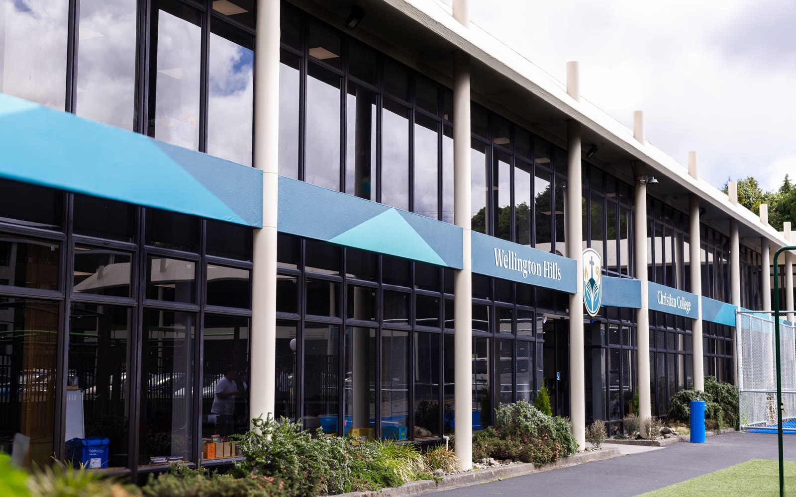

Case /03 Selected work← All work
Peniel/Trust
/ The brief
The trust behind Wellington Hills Christian College exists to expand access to high-quality, affordable Christian education. It needed a public home that could explain the mission, report progress to supporters, and make giving straightforward.
/ The approach
The site pairs a clear story (about, our work, project updates) with working giving rails. Donations are set up end to end and receipts go out automatically, with no one stuck doing admin. The Growth Fund campaign page adds custom interactive blocks, including a pledge calculator that shows a supporter what a five-year pledge really costs once the NZ donation tax credit comes back.
- Site design & build
- Donations & automated receipts
- Growth Fund campaign page
- Pledge calculator & custom blocks

/ The outcome
- Giving works
- Donations flow with receipts issued automatically, no admin in the loop
- Honest arithmetic
- A calculator that shows what a pledge really costs after the tax credit
- Ongoing
- The engagement continues: campaign pages ship as the fund grows
“Most giving pages ask for trust. This one shows the arithmetic.”